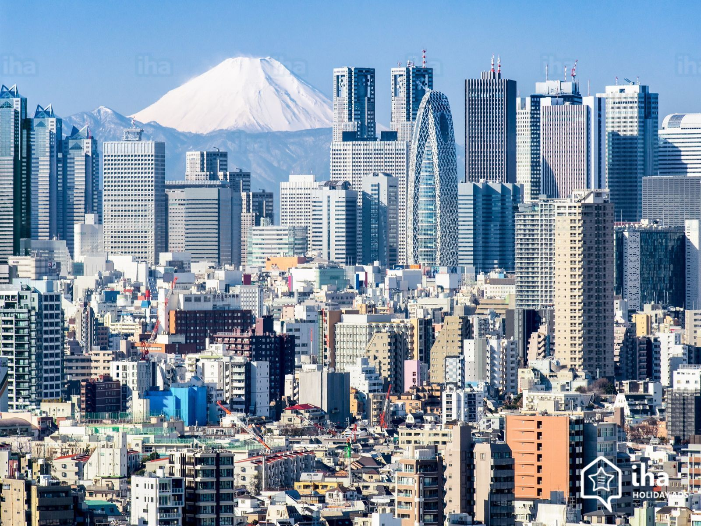

TOKYO: THE HISTORY
The Present
Tokyo: the capital city of Japan, is one of the most populated metropolitan city in the world. It harbors a populace of roughly 37 million. Located in East Asia it assumes the role of neighbor (to the east) of South Korea. Known for their technological advancement particularly in manufacturing cars, electronics and even robots, thus becoming the world's technological hub. Referred to as a city, Tokyo is best described as a metropolis infused with prefecture components. Within Tokyo there are over thirty municipalities, 23 wards and numerous islands situated in its outskirts.
The Past
Origins
The city of Tokyo is over 4 centuries old. Originally named Edo, the city started to flourish after Tokugawa settled there in the early 1600's. As the focus of Japanese political and cultural customs, Edo refined into a huge metropolis with a populace of one million by the 1840. During this period, the Emperor took shelter in Kyoto, recognized as the primary capital of the nation. The Edo Era continued for nearly 200 plus years until the Meiji Restoration in the late 1800's, when the Tokugawa Shogunate ended and imperial rule was restored. The Emperor then relocated to Edo, later to be called Tokyo. Eventually, becoming the capital of Japan.
The Middle Stages
The Meiji era (1868-1912), Japan started an aggressive adaptation of Western culture. Changes in construction, technology, politics, farming, and education. During the late 1800's Japan's first telecommunications line was initiated, the first steam ran train started operating in 1872 from. Western fashion and cosmetics took over the old-style topknot and robes worn by men, with stylish hats, high collars, and suits. In the 1880's began several developments including the zoological gardens opening in Ueno, the cabinet system of government was adopted, municipal organization system introduced, and the establishment of the political system of the modern state
The 1900's
From 1912-1926 also known as the era of Taisho, urbanization brought many Japanese people to the city for work and schooling. Standards of living, education, and gender equality all improved. Sadly, the Great Kanto Earthquake, hit Tokyo hard in 1923, causing devastating fire to burn the center of city down. Roughly, 150,000 casualties were pronounced dead or MIA. Many houses, business and establishments were destroyed, leaving many homeless and in dire poverty. Financial problems arose while attempting reconstruction, the estimated costs exceeded the national budget, leaving a small portion of it to be completed. The Showa era (1926-1989) introduced many advancements throughout Tokyo and all of Japan. The first subway line was created, universal male suffrage was granted, the Tokyo Airport was finalized, and in the early 1940's the Port of Tokyo was opened. By 30's the population rivaled those of New York, Los Angeles, and London.
The Pacific War, circa 1941, had a massive effect on Tokyo. The administrative government commissioned a war time council and a governor was selected. In the wars final phases, Tokyo was bombarded over 100 times. The heaviest air raid on the city was on March 10, 1945, which caused an enormous casualty count and millions of dollars in property and material damage. During the last periods of World War II, the United States dropped nuclear weapons on the Japanese cities of Hiroshima and Nagasaki on August 6 and 9, 1945, killing 120,000 people on immediate impact. The war came to an end on September 2, 1945, when the Japanese government was forced to surrender. Tokyo's infrastructure had been nearly destroyed by constant bombardment and the population had nearly been cut into half. In the late 1940's the new Constitution of Japan took effect, and the 23 special-ward system started in Tokyo.
Much of the 1950's were a time for recovery for the city and nation. Broadcasting via television began, and Japan joined the UN in 1956. The Economic recovery was boosted by Koreans migrating to the city to avoid the Korean War. The influx of new people helped lead to a rapid economic growth in the 1960s. Due to technological advancements and the start of new businesses and technologies, mass production of electronic appliances such as televisions, refrigerators, and washing machines; boosted the economy. An immediate effect on the daily lives of the citizens of Tokyo took place, things became easier. The population reached 10 million in the 1960s. During this period the Olympic Games were held in Tokyo, the “Bullet Train” line began operations, and the Metropolitan Expressway was opened, launching Tokyo into an even higher state of prosperity. The 1970s, brought a strain of many issues to offset the rapid economic growth. Environmental issues such as air and river pollution, a decrease of the wildlife population, and radiation from all the warfare were taking effect. Another calamity known as the Oil Crisis thwarted many years' economic development and environmental prosperity. The 1980s, saw Tokyo take large steps in economically by increasing global activity assisted with the emergence of top-notch technology, refined culture, and stylish fashion. From the late 1980s, to present day, land and stock prices rise rapidly, forming what we now know as the "bubble economy".
The Future
As Tokyo looks ahead; an uncertain forthcoming leers backs. After the extensive reconstruction, Tokyo intends to fortify international dominance by improving infrastructure, cultivating international relations, securing the city, sustaining the environment, education and community development, and energy efficiency.
The Game Plan
THE GOOD
Financially, Tokyo's future looks incredibly optimistic. Banking is booming as deposits exceed loans by over 2 trillion dollars. Over 95% of Japanese debt is domestic, so reliance on the foreign lender is nonexistent. Tokyo's gold and foreign exchange reserves contain over $1 trillion dollars. Strong trade and yielding surplus with China and South Korea fortifies the market of Tokyo, being the only economy to do so. An innovative and creative workforce leads the world in U.S. patents for any Asian country. They also the privilege of hosting the 2020 Olympic and Para Olympic games, being the only Asian country to host the honor twice. Economist forecast that the mass influx of foreigners will reinvigorate the economy.
THE BAD
A falling marriage and birth rate perpetuates large difficulties for Tokyo. Economist speculate a third of the population will be over the age of 60 within the next two decades. With a diminishing workforce and Japanese strict immigration policies shrinking, questions of economic instability arise. Other foreseeable issues are unnecessary homogeneity, North Korea potential imperialistic aggression and constant nuclear threats, natural disasters (earthquakes, tsunamis), lack of nuclear power, rising suicide, unhealthy food production and obesity outbreak, and animal right violations.
On the other end of the spectrum, Tokyo and pretty much all of Japan has much work to do. Its image in the eyes of foreign powers, suggests indifferent behavior over past atrocities and deeds. Heavy crictisms of Japanese government for the use of pop culture, such as anime and manga as a tool for foreign policy. The hope is that popular animated figures will improve international dealings rather than employing diplomacy in an attempt to convince people to embrace 'A Modern Japan'.